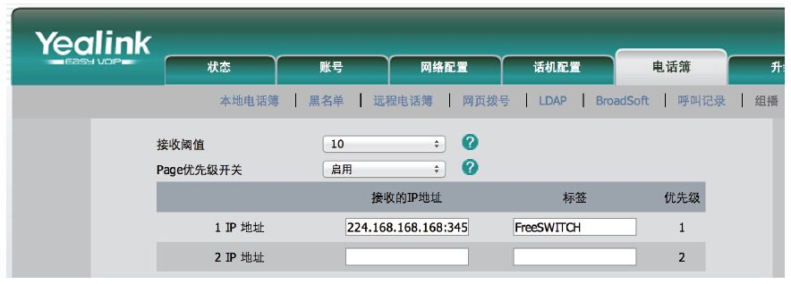

15.3 使用组播功能做网络广播
在某些特殊的场景下，拿起电话拨打一个号码，就可以对一大群人喊话，广播功能可以大大提高工作效率。
广播功能可以使用会议实现，简单地发起N路通话加入一个会议也可以做到广播的效果。不过，那样实现要建立N路通话，需要消耗很多的网络资源；另外，也无法保证对方能及时接听，影响信息的送达。实现该业务模式最经济的方式就是使用组播（Multicast，或称多播）。组播只向组播地址发送一个RTP流，而监听该组播地址的所有主机就都能收到。
FreeSWITCH有一个mod_esf（Extra SIP Functionality）模块，它提供一个esf_page_group的App可以支持组播。
esf_page_group有三个参数，分别是：
·组播地址，默认为224.168.168.168。
·端口号，默认为35467。
·控制端口号，默认为6001。
要能收到组播包并播放声音，也需要配置亿联话机以启用这项功能 [1] ，配置界面如图15-6所示。

图15-6 配置亿联话机接受组播包
该配置项比较难找，依次找到菜单“电话簿”→“组播”，在第一个IP地址框里填入224.168.168.168:34567，标签栏可以任意填，起一个好记的名字就行。
在FreeSWITCH默认的配置中，拨打号码7243就直接向该地址发送组播，所以现在你可以拿电话拨打7243试一下了。
默认的Dialplan配置如下：
<extension name="rtp_multicast_page">
<condition field="destination_number" expression="^pagegroup$|^7243$">
<action application="answer"/>
<action application="esf_page_group"/>
</condition>
</extension>
如果你想发到其他的地址，可以配置相关参数，如下列配置可以将RTP包发到组播地址224.0.0.100：
<action application="esf_page_group" data="esf_page_group 224.0.0.100 34567 6001"/>
与普通的IP地址不同，组播需要配置组播地址。众所周知，在IPv4中，组播地址的范围是从224.0.0.0到239.255.255.255，由于实际用到组播的业务却很少，因而好多人可能不是很熟悉。在有的系统上需要配置组播路由，如以下命令可以在Linux系统的eth0上配置组播路由：
ip route add 224.0.0.0/4 dev eth0 src 192.168.5.2
使用上述命令还需要iproute2软件包支持。另外，在实际应用中为避免组播风暴及潜在的冲突，可能需要把具有组播功能的话机都划分到一个VLAN上。再者，组播包一般不能穿越路由器，如果要跨路由器组播的话，需要支持组播的路由器，并进行适当的配置，这些都超出了本书的范围，有兴趣的读者可以自行参考相关资料。
[1] 笔者不知道其他话机是否具有这样的功能，最初亿联也没有，是笔者帮助FreeSWITCH的作者Anthony Minessale联系到亿联的工程师后他们才实现的。